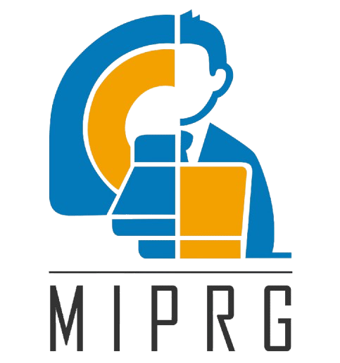

Multimodal AI Researcher
Signal Processing, Computer Vision, LLMs
Transforming complex data into intelligent solutions through cutting-edge research in signal processing, computer vision, and large language models.
Explore My WorkAbout Me
Multimodal AI researcher with hands-on experience in Signal Processing, Computer Vision, and NLP, grounded in a strong Electrical Engineering foundation. Proficient in building and deploying end-to-end ML pipelines using PyTorch, FastAPI, and Docker, with additional expertise in Edge AI deployment on resource-constrained hardware.
Experienced in Vision-Language Models, Generative AI, and real-time intelligent surveillance systems. Passionate about building intelligent systems that create measurable impact in the real world.
Experience
National Center of Artificial Intelligence (NCAI)
Dec 2025 – Mar 2026Research Assistant | ncaipk.com · Islamabad, Pakistan
- Developed Smart-Eye-AI, a real-time intelligent surveillance system implementing YOLO-based intrusion detection with multi-object tracking and custom polyline boundary-crossing logic to detect and flag unauthorized zone entry
- Built a real-time facial recognition attendance system using ArcFace/InsightFace embeddings with cosine similarity matching, and implemented custom fire and smoke detection models for safety monitoring
- Explored DeepStream and GStreamer pipelines for real-time multi-stream video analytics architecture during system design research

Medical Image Processing Research Group (MIPRG)
Mar 2024 – Jun 2025Undergraduate Researcher | miprg.comsats.edu.pk · Islamabad, Pakistan
- Designed a reconstruction algorithm resilient to anomalous k-space data, improving cardiovascular flow imaging accuracy
- Applied statistical modeling with IQR and binning to suppress anomalies while maintaining interpretability
- Implemented adaptive soft-thresholding to reduce artifacts while preserving anatomical flow structures
- Built a MATLAB pipeline with GPU acceleration (RTX 4090), achieving up to 44x speedup
- Extracted the aorta, visualized blood flow patterns, and performed quantitative 4D flow MRI analysis with clinical collaborators
Featured Projects

4D Cardiac Flow MRI Reconstruction
Designed a reconstruction algorithm resilient to anomalous k-space data for cardiovascular flow imaging, with GPU-accelerated MATLAB pipeline achieving up to 44x speedup and quantitative blood flow analysis.

CheXzero
Trained a CLIP-inspired Vision-Language model with dual-encoder architecture using contrastive learning for multi-label chest pathology classification, enabling label-free zero-shot diagnosis without radiologist annotations.

GAN-based T1-T2 MRI Conversion
Engineered a CycleGAN framework for bidirectional unpaired MRI translation using adversarial and cycle-consistency losses. Deployed as a FastAPI inference service containerized with Docker and hosted on AWS EC2.

Knee Osteoarthritis Severity Prediction
Built an end-to-end grading pipeline combining texture descriptors with a fine-tuned ResNet18 for 5-class severity prediction. Integrated classical ML and deep learning outputs via stacked ensemble learning with Grad-CAM explainability.

YOLO-based PCB Defect Detection
Trained a YOLO-based object detection model on 700+ PCB images across 6 defect classes in PyTorch. Converted to ONNX format for CPU-based real-time inference without GPU dependency.

Agentic Network Intrusion Detection System
Currently developing an agentic NIDS leveraging deep learning for real-time threat detection and autonomous response across network traffic streams.
Skills
Click a node to explore the toolkit behind it.